Python integration (for use in Jupyter Notebooks)
Please install the requirements using:
Load rpy2 extension:
Install the package (if not aleady installed):
%%R
if (!require(devtools, quietly=T)) install.packages("devtools")
if (!require(ComplexUpset, quietly=T)) devtools::install_github("krassowski/complex-upset")Prepare the datasets
| 48 | 112 | 124 | |
|---|---|---|---|
| title | ’Til There Was You | 10 Things I Hate About You | 100 Mile Rule |
| year | 1997 | 1999 | 2002 |
| length | 113 | 97 | 98 |
| budget | 2.3e+07 | 1.6e+07 | 1.1e+06 |
| rating | 4.8 | 6.7 | 5.6 |
| votes | 799 | 19095 | 181 |
| r1 | 4.5 | 4.5 | 4.5 |
| r2 | 4.5 | 4.5 | 4.5 |
| r3 | 4.5 | 4.5 | 4.5 |
| r4 | 14.5 | 4.5 | 4.5 |
| r5 | 14.5 | 4.5 | 14.5 |
| r6 | 14.5 | 14.5 | 24.5 |
| r7 | 14.5 | 24.5 | 14.5 |
| r8 | 4.5 | 14.5 | 14.5 |
| r9 | 4.5 | 14.5 | 4.5 |
| r10 | 14.5 | 14.5 | 14.5 |
| mpaa | PG-13 | PG-13 | R |
| Action | 0 | 0 | 0 |
| Animation | 0 | 0 | 0 |
| Comedy | 1 | 1 | 1 |
| Drama | 0 | 0 | 0 |
| Documentary | 0 | 0 | 0 |
| Romance | 1 | 1 | 0 |
| Short | 0 | 0 | 0 |
[‘Action’, ‘Animation’, ‘Comedy’, ‘Drama’, ‘Documentary’, ‘Romance’, ‘Short’]
Convert the genre indicator columns to use boolean values:
| 48 | 112 | 124 | |
|---|---|---|---|
| Action | False | False | False |
| Animation | False | False | False |
| Comedy | True | True | True |
| Drama | False | False | False |
| Documentary | False | False | False |
| Romance | True | True | False |
| Short | False | False | False |
Quick notes on rpy2 %%R magic usage
- use
-iswitch to import data into R using rpy2 interface -
-wand-hcan be used to adjust the width and height of the plot -
-rswitch can be used to adjust DPI
0. Basic usage
There are two required arguments: - the first argument is expected to be a dataframe with both group indicator variables and covariates, - the second argument specifies a list with names of column which indicate the group membership.
Additional arguments can be provided, such as name (specifies xlab for intersection matrix) or width_ratio (specifies how much space should be occupied by the set size panel). Other such arguments are discussed at length later in this document.
%%R -w 800 -h 300 upset(movies, genres, name='genre', width_ratio=0.1)
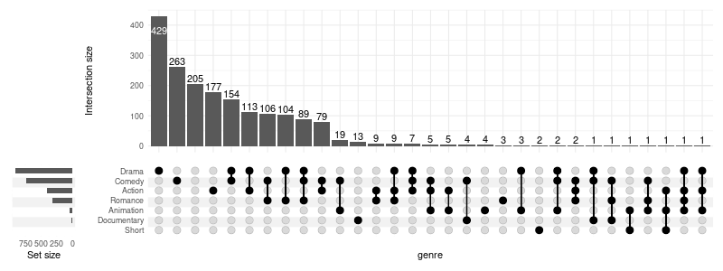
0.1 Selecting intersections by size
We will focus on the intersections with at least ten members (min_size=10) and on a few variables which are significantly different between the intersections (see 2. Running statistical tests).
When using min_size, the empty groups will be skipped by default (e.g. Short movies would have no overlap with size of 10). To keep all groups pass keep_empty_groups=TRUE:
%%R -w 800 -h 300
(
upset(movies, genres, name='genre', width_ratio=0.1, min_size=10, wrap=TRUE, set_sizes=FALSE)
+ ggtitle('Without empty groups (Short dropped)')
+ # adding plots is possible thanks to patchwork
upset(movies, genres, name='genre', width_ratio=0.1, min_size=10, keep_empty_groups=TRUE, wrap=TRUE, set_sizes=FALSE)
+ ggtitle('With empty groups')
)[1] “Dropping empty groups: Short”
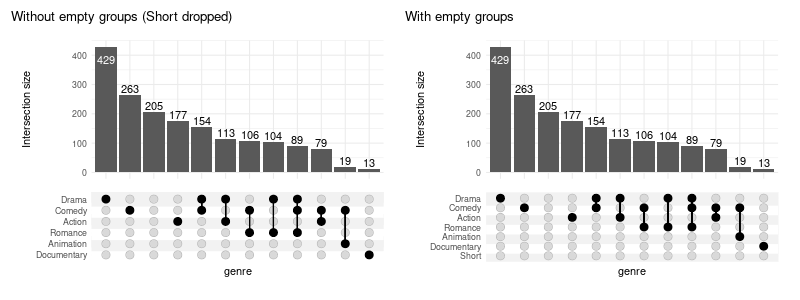
When empty columns are detected a warning will be issued. The silence it, pass warn_when_dropping_groups=FALSE.
1. Adding components
We can add multiple annotation components (also called panels):
%%R -w 800 -h 800
set.seed(0) # keep the same jitter for identical plots
upset(
movies,
genres,
annotations = list(
'Length'=list(
aes=aes(x=intersection, y=length),
geom=geom_boxplot()
),
'Rating'=list(
aes=aes(x=intersection, y=rating),
geom=list(
# checkout ggbeeswarm::geom_quasirandom for better results!
geom_jitter(aes(color=log10(votes))),
geom_violin(width=1.1, alpha=0.5)
)
),
'Budget'=list(
aes=aes(x=intersection, y=budget),
geom=geom_boxplot()
)
),
min_size=10,
width_ratio=0.1
)[1] “Dropping empty groups: Short”
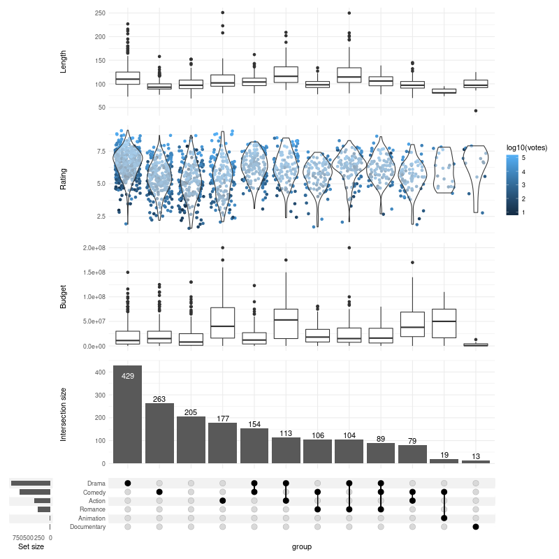
For simple annotations, such as the length above, you can use a shorthand notation of upset_annotate:
%%R -w 800 -h 600
upset(
movies,
genres,
annotations = list(
'Length'=upset_annotate('length', geom_boxplot()),
'Budget'=upset_annotate('budget', geom_boxplot())
),
min_size=10,
width_ratio=0.1
)[1] “Dropping empty groups: Short”
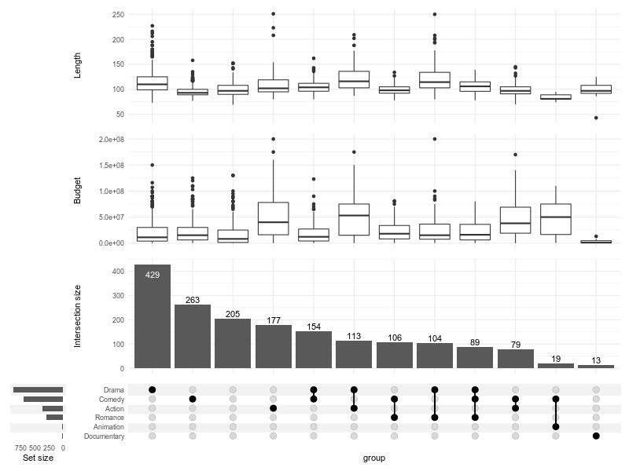
You can also barplots to demonstrate difference in proportions of categorical variables:
%%R -w 800 -h 500
upset(
movies,
genres,
annotations = list(
'MPAA Raiting'=list(
aes=aes(x=intersection, fill=mpaa),
geom=list(
geom_bar(stat='count', position='fill'),
scale_y_continuous(labels=scales::percent_format()),
scale_fill_manual(values=c(
'R'='#E41A1C', 'PG'='#377EB8',
'PG-13'='#4DAF4A', 'NC-17'='#FF7F00'
))
)
)
),
width_ratio=0.1
)2. Running statistical tests
[1] “year, length, budget, rating, votes, r1, r2, r3, r4, r5, r6, r7, r8, r9, r10, mpaa differ significantly between intersections”
| variable | p.value | statistic | test | fdr | |
|---|---|---|---|---|---|
| length | length | 6.511525e-71 | 422.884445 | Kruskal-Wallis rank sum test | 1.106959e-69 |
| rating | rating | 1.209027e-46 | 301.727638 | Kruskal-Wallis rank sum test | 1.027673e-45 |
| budget | budget | 3.899860e-44 | 288.974760 | Kruskal-Wallis rank sum test | 2.209921e-43 |
| r8 | r8 | 9.900004e-39 | 261.288151 | Kruskal-Wallis rank sum test | 4.207502e-38 |
| mpaa | mpaa | 3.732200e-35 | 242.779393 | Kruskal-Wallis rank sum test | 1.268948e-34 |
| r9 | r9 | 1.433256e-30 | 218.781602 | Kruskal-Wallis rank sum test | 4.060891e-30 |
| r1 | r1 | 2.211600e-23 | 180.327398 | Kruskal-Wallis rank sum test | 5.371029e-23 |
| r4 | r4 | 1.008119e-18 | 154.627715 | Kruskal-Wallis rank sum test | 2.142254e-18 |
| r3 | r3 | 2.568227e-17 | 146.702174 | Kruskal-Wallis rank sum test | 4.851095e-17 |
| r5 | r5 | 9.823827e-16 | 137.663096 | Kruskal-Wallis rank sum test | 1.670051e-15 |
| r7 | r7 | 9.201549e-14 | 126.192430 | Kruskal-Wallis rank sum test | 1.422058e-13 |
| r2 | r2 | 2.159955e-13 | 124.006043 | Kruskal-Wallis rank sum test | 3.059936e-13 |
| r10 | r10 | 1.283470e-11 | 113.381126 | Kruskal-Wallis rank sum test | 1.678384e-11 |
| votes | votes | 2.209085e-10 | 105.795879 | Kruskal-Wallis rank sum test | 2.682460e-10 |
| r6 | r6 | 3.779129e-05 | 70.809705 | Kruskal-Wallis rank sum test | 4.283013e-05 |
| year | year | 2.745818e-02 | 46.559723 | Kruskal-Wallis rank sum test | 2.917431e-02 |
| title | title | 2.600003e-01 | 34.533745 | Kruskal-Wallis rank sum test | 2.600003e-01 |
Kruskal-Wallis rank sum test is not always the best choice.
You can either change the test for:
- all the variables (
test=your.test), or - specific variables (using
tests=list(variable=some.test)argument)
The tests are called with (formula=variable ~ intersection, data) signature, such as accepted by kruskal.test. The result is expected to be a list with following members:
p.valuestatisticmethod
It is easy to adapt tests which do not obey this signature/output convention; for example the Chi-squared test and anova can be wrapped with two-line functions as follows:
%%R
chisq_from_formula = function(formula, data) {
chisq.test(
ftable(formula, data)
)
}
anova_single = function(formula, data) {
result = summary(aov(formula, data))
list(
p.value=result[[1]][['Pr(>F)']][[1]],
method='Analysis of variance Pr(>F)',
statistic=result[[1]][['F value']][[1]]
)
}
custom_tests = list(
mpaa=chisq_from_formula,
budget=anova_single
)[1] “year, length, budget, rating, votes, r1, r2, r3, r4, r5, r6, r7, r8, r9, r10, mpaa differ significantly between intersections”
| variable | p.value | statistic | test | fdr | |
|---|---|---|---|---|---|
| length | length | 6.511525e-71 | 422.884445 | Kruskal-Wallis rank sum test | 1.106959e-69 |
| budget | budget | 1.348209e-60 | 13.663948 | Analysis of variance Pr(>F) | 1.145977e-59 |
| rating | rating | 1.209027e-46 | 301.727638 | Kruskal-Wallis rank sum test | 6.851151e-46 |
| mpaa | mpaa | 9.799097e-42 | 406.338139 | Pearson’s Chi-squared test | 4.164616e-41 |
| r8 | r8 | 9.900004e-39 | 261.288151 | Kruskal-Wallis rank sum test | 3.366002e-38 |
| r9 | r9 | 1.433256e-30 | 218.781602 | Kruskal-Wallis rank sum test | 4.060891e-30 |
Many tests will require at least two observations in each group. You can skip intersections with less than two members with min_size=2.
%%R
bartlett_results = suppressWarnings(
upset_test(movies, genres, test=bartlett.test, min_size=2)
)
tail(bartlett_results)[1] “NA, year, length, budget, rating, votes, r1, r2, r3, r4, r5, r6, r7, r8, r9, r10, NA differ significantly between intersections” variable p.value statistic year year 1.041955e-67 386.53699 length length 3.982729e-67 383.70148 budget budget 7.637563e-50 298.89911 rating rating 3.980194e-06 66.63277 title title NA NA mpaa mpaa NA NA test fdr year Bartlett test of homogeneity of variances 1.302444e-67 length Bartlett test of homogeneity of variances 4.595457e-67 budget Bartlett test of homogeneity of variances 8.183103e-50 rating Bartlett test of homogeneity of variances 3.980194e-06 title Bartlett test of homogeneity of variances NA mpaa Bartlett test of homogeneity of variances NA
2.1 Ignore specific variables
You may want to exclude variables which are: - highly correlated and therefore interfering with the FDR calculation, or - simply irrelevant
In the movies example, the title variable is not a reasonable thing to compare. We can ignore it using:
%%R
# note: title no longer present
rownames(upset_test(movies, genres, ignore=c('title')))[1] “year, length, budget, rating, votes, r1, r2, r3, r4, r5, r6, r7, r8, r9, r10, mpaa differ significantly between intersections” [1] “length” “rating” “budget” “r8” “mpaa” “r9” “r1” “r4”
[9] “r3” “r5” “r7” “r2” “r10” “votes” “r6” “year”
3. Adjusting “Intersection size”
3.1 Counts
The counts over the bars can be disabled:
%%R -w 800 -h 300
upset(
movies,
genres,
base_annotations=list(
'Intersection size'=intersection_size(counts=FALSE)
),
min_size=10,
width_ratio=0.1
)[1] “Dropping empty groups: Short”
The colors can be changed:
%%R -w 800 -h 300
upset(
movies,
genres,
base_annotations=list(
'Intersection size'=intersection_size(
text_colors=c(
on_background='brown', on_bar='yellow'
)
)
),
min_size=10,
width_ratio=0.1
)[1] “Dropping empty groups: Short”
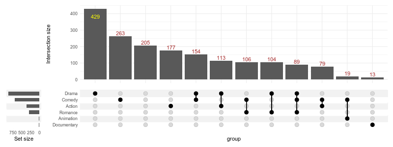
Any parameter supported by geom_text can be passed in text list:
%%R -w 800 -h 300
upset(
movies,
genres,
base_annotations=list(
'Intersection size'=intersection_size(
text=list(
vjust=-0.1,
hjust=-0.1,
angle=45
)
)
),
min_size=10,
width_ratio=0.1
)[1] “Dropping empty groups: Short”
3.2 Fill the bars
%%R -w 800 -h 300
upset(
movies,
genres,
base_annotations=list(
'Intersection size'=intersection_size(
counts=FALSE,
aes=aes(fill=mpaa)
)
),
width_ratio=0.1
)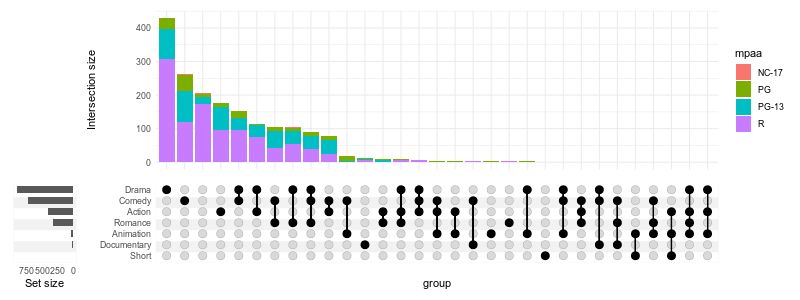
3.3 Adjusting the height of the matrix/intersection size
Setting height_ratio=1 will cause the intersection matrix and the intersection size to have an equal height:
%%R -w 800 -h 300
upset(
movies,
genres,
height_ratio=1,
width_ratio=0.1
)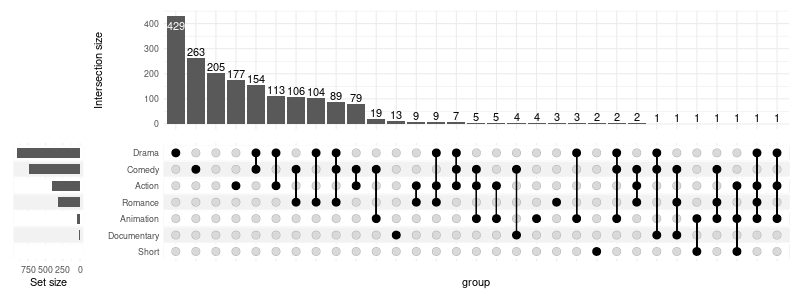
3.5 Hiding intersection size
You can always disable the intersection size altogether:
%%R -w 800 -h 160
upset(
movies,
genres,
base_annotations=list(),
min_size=10,
width_ratio=0.1
)[1] “Dropping empty groups: Short”
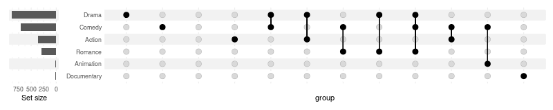
3.6 Showing intersection size/union size ratio
While this cannot be computed for the null intersection (observations which do not belong to either of the groups), it is usefull to visualise which intersections might be large due to the chance (i.e. corrsponding groups being proportionally larger) alone:
%%R -w 800 -h 600
upset(
movies, genres, name='genre', width_ratio=0.1, min_size=10,
base_annotations=list(
'Intersection size'=intersection_size(),
'Intersection ratio'=intersection_ratio()
)
)[1] “Dropping empty groups: Short”
The plot above tells us that the analysed documentary movies are always documentaries (and nothing more!), while comedies more often include elements of other genres (e.g. drama, romance) rather than being comedies alone (like stand-up shows).
3.7 Showing percentages
text_aes can be used to manipulate the aesthetics of the labels. Using the intersection_size and union_size one can calculate percentage of items in the intersection (relative to the potential size of the intersection). A upset_text_percentage(digits=0, sep='') shorthand is provided for convenience; please note that it has to be used with aes_ rather than aes:
%%R -w 800 -h 600
upset(
movies, genres, name='genre', width_ratio=0.1, min_size=10,
base_annotations=list(
# with manual aes specification:
'Intersection size'=intersection_size(text_aes=aes(label=paste0(round(intersection_size/union_size * 100), '%'))),
# using shorthand:
'Intersection ratio'=intersection_ratio(text_aes=aes_(label=upset_text_percentage()))
)
)[1] “Dropping empty groups: Short”
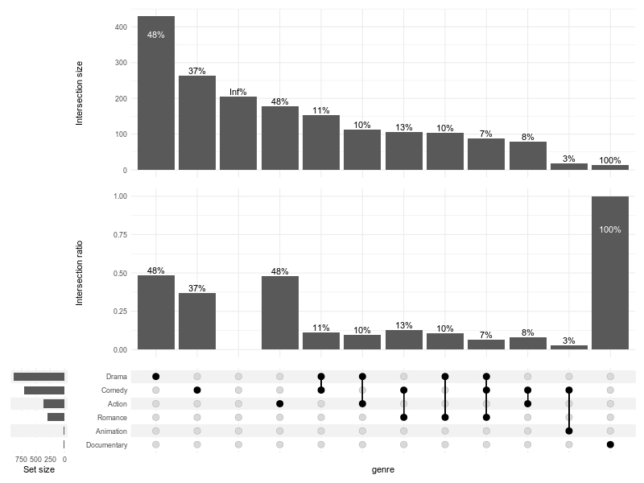
4. Adjusting “set size”
4.1 Rotate labels
To rotate the labels modify correposnding theme:
%%R -w 400 -h 300
upset(
movies, genres,
min_size=100,
width_ratio=0.15,
themes=upset_modify_themes(
list(
'overall_sizes'=theme(axis.text.x=element_text(angle=90))
)
)
)[1] “Dropping empty groups: Animation, Documentary, Short”
To display the ticks:
%%R -w 400 -h 300
upset(
movies, genres, width_ratio=0.3, min_size=100, wrap=TRUE,
themes=upset_modify_themes(
list(
'overall_sizes'=theme(axis.ticks.x=element_line())
)
)
)[1] “Dropping empty groups: Animation, Documentary, Short”
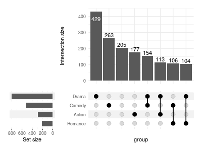
4.2 Modify geoms and other layers
Arguments of the geom_bar can be passed to upset_set_size; it can even use a different geom, or be replaced with a custom list of layers altogether:
%%R -w 800 -h 300
(
upset(
movies, genres, width_ratio=0.5, max_size=100, min_size=15, wrap=TRUE,
set_sizes=upset_set_size(
width=0.4
)
)
+
upset(
movies, genres, width_ratio=0.5, max_size=100, min_size=15, wrap=TRUE,
set_sizes=upset_set_size(
geom=geom_point,
stat='count',
color='blue'
)
)
+
upset(
movies, genres, width_ratio=0.5, max_size=100, min_size=15, wrap=TRUE,
set_sizes=list(
geom_point(aes(y=..count../max(..count..)), stat='count'),
ylab('Size relative to the largest'),
scale_y_reverse()
)
)
)[1] “Dropping empty groups: Documentary, Short” [1] “Dropping empty groups: Documentary, Short” [1] “Dropping empty groups: Documentary, Short”
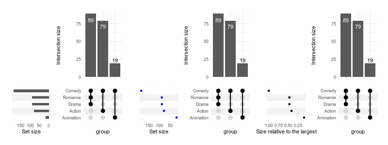
4.3 Logarithmic scale
In order to use a log scale we need pass additional scale to in layers argument. However, as the bars are on flipped coordinates, we need a reversed log transformation:
%%R reverse_log_trans
Which is then easy to apply:
%%R -w 500 -h 300
upset(
movies, genres,
width_ratio=0.1,
min_size=10,
set_sizes=upset_set_size(
width=0.4,
layers=list(
scale_y_continuous(trans=reverse_log_trans())
)
),
themes=upset_modify_themes(
list('overall_sizes'=theme(axis.text.x=element_text(angle=90)))
),
queries=list(upset_query(set='Drama', fill='blue'))
)[1] “Dropping empty groups: Short”
R[write to console]: Scale for ‘y’ is already present. Adding another scale for ‘y’, which will replace the existing scale.

We can also modify the labels to display the logged values:
%%R -w 500 -h 300
upset(
movies, genres,
min_size=10,
width_ratio=0.2,
set_sizes=upset_set_size(
width=0.4,
layers=list(
scale_y_continuous(
trans=reverse_log_trans(),
labels=log10
),
ylab('log10(set size)')
)
)
)[1] “Dropping empty groups: Short”
R[write to console]: Scale for ‘y’ is already present. Adding another scale for ‘y’, which will replace the existing scale.
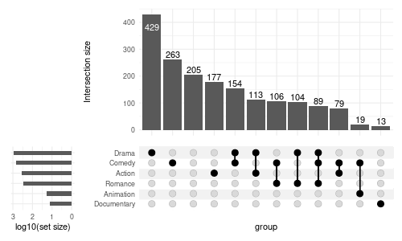
5. Adjusting other aesthetics
Stripes
%%R -w 800 -h 400
upset(
movies,
genres,
stripes=c('cornsilk1', 'deepskyblue1'),
min_size=10
)[1] “Dropping empty groups: Short”
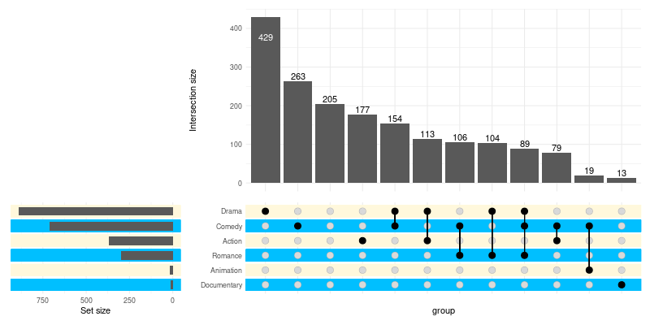
To effectively disable the stripes:
%%R -w 800 -h 400
upset(
movies,
genres,
stripes=c('white', 'white'),
min_size=10
)[1] “Dropping empty groups: Short”
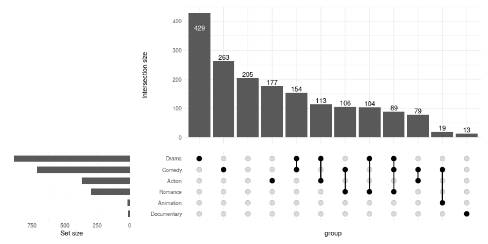
Adding title
Adding title with ggtitle with add it to the intesection matrix:
%%R -w 800 -h 400
upset(movies, genres, min_size=10) + ggtitle('Intersection matrix title')[1] “Dropping empty groups: Short”
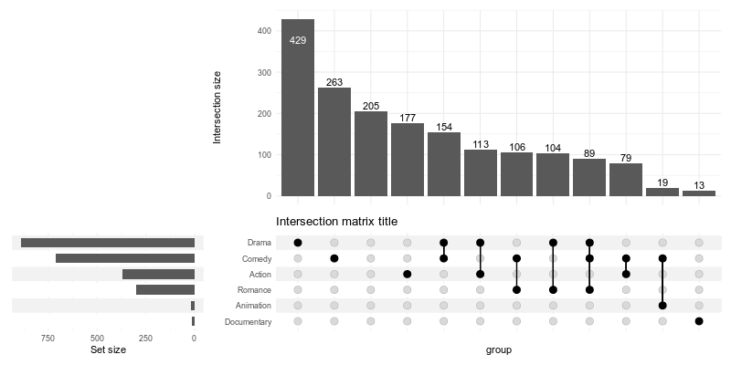
In order to add a title for the entire plot, you need to wrap the plot:
%%R -w 800 -h 400
upset(movies, genres, min_size=10, wrap=TRUE) + ggtitle('The overlap between genres')[1] “Dropping empty groups: Short”
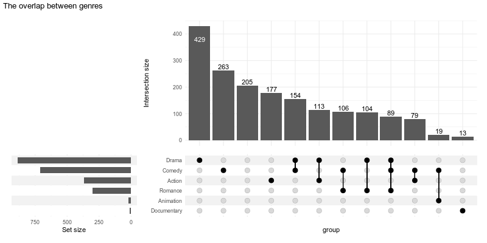
6. Themes
The themes for specific components are defined in upset_themes list, which contains themes for:
%%R names(upset_themes)
[1] “intersections_matrix” “Intersection size” “overall_sizes”
[4] “default”
You can substitute this list for your own using themes argument. While you can specify a theme for every component, if you omit one or more components those will be taken from the element named default.
6.1 Substituting themes
%%R -w 800 -h 400 upset(movies, genres, min_size=10, themes=list(default=theme()))
[1] “Dropping empty groups: Short”
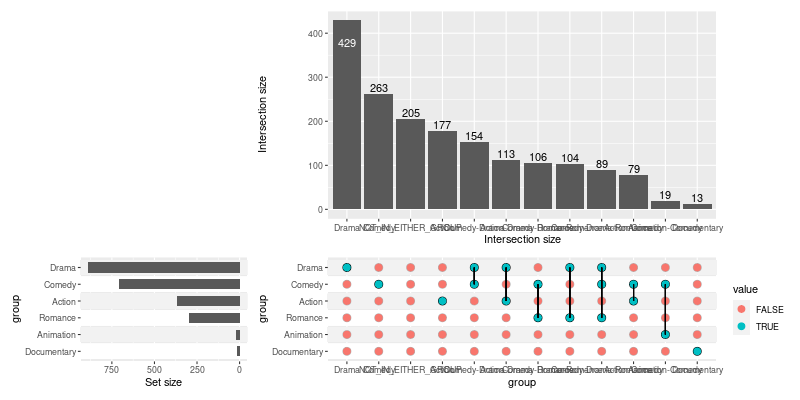
You can also add themes for your custom panels/annotations:
%%R -w 800 -h 800
upset(
movies,
genres,
annotations = list(
'Length'=list(
aes=aes(x=intersection, y=length),
geom=geom_boxplot()
),
'Rating'=list(
aes=aes(x=intersection, y=rating),
geom=list(
geom_jitter(aes(color=log10(votes))),
geom_violin(width=1.1, alpha=0.5)
)
)
),
min_size=10,
width_ratio=0.1,
themes=modifyList(
upset_themes,
list(Rating=theme_void(), Length=theme())
)
)[1] “Dropping empty groups: Short”
6.2 Adjusting the default themes
Modify all the default themes as once with upset_default_themes():
%%R -w 800 -h 400
upset(
movies, genres, min_size=10, width_ratio=0.1,
themes=upset_default_themes(text=element_text(color='red'))
)[1] “Dropping empty groups: Short”
To modify only a subset of default themes use upset_modify_themes():
%%R -w 800 -h 400
upset(
movies, genres,
base_annotations=list('Intersection size'=intersection_size(counts=FALSE)),
min_size=100,
width_ratio=0.1,
themes=upset_modify_themes(
list(
'intersections_matrix'=theme(text=element_text(size=20)),
'overall_sizes'=theme(axis.text.x=element_text(angle=90))
)
)
)[1] “Dropping empty groups: Animation, Documentary, Short”
7. Highlighting (queries)
Pass a list of lists generated with upset_query() utility to the optional queries argument to selectively modify aesthetics of specific intersections or sets.
Use one of the arguments: set or intersection (not both) to specify what to highlight: - set will highlight the bar of the set size, - intersection will highlight an intersection on all components (by default), or on components chosen with only_components - all other parameters will be used to modify the geoms
%%R -w 800 -h 600
upset(
movies, genres, name='genre', width_ratio=0.1, min_size=10,
annotations = list(
'Length'=list(
aes=aes(x=intersection, y=length),
geom=geom_boxplot()
)
),
queries=list(
upset_query(
intersect=c('Drama', 'Comedy'),
color='red',
fill='red',
only_components=c('intersections_matrix', 'Intersection size')
),
upset_query(
set='Drama',
fill='blue'
),
upset_query(
intersect=c('Romance', 'Comedy'),
fill='yellow',
only_components=c('Length')
)
)
)[1] “Dropping empty groups: Short”
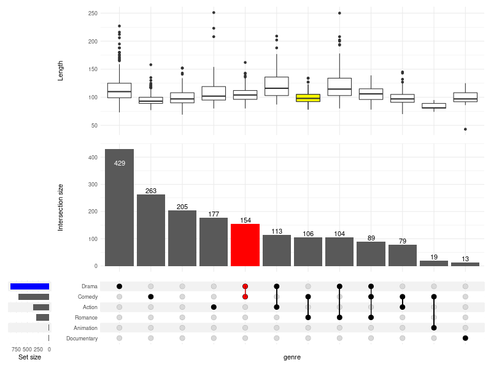
8. Sorting
8.1 Sorting intersections
By degree:
%%R -w 800 -h 300 upset(movies, genres, width_ratio=0.1, sort_intersections_by='degree')
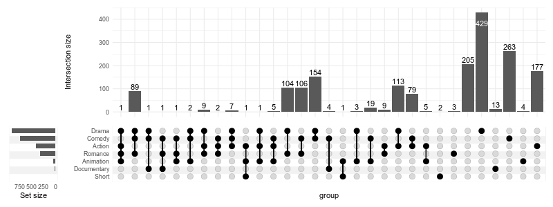
By ratio:
%%R -w 800 -h 400
upset(
movies, genres, name='genre', width_ratio=0.1, min_size=10,
sort_intersections_by='ratio',
base_annotations=list(
'Intersection size'=intersection_size(text_aes=aes_(label=upset_text_percentage())),
'Intersection ratio'=intersection_ratio(text_aes=aes_(label=upset_text_percentage()))
)
)[1] “Dropping empty groups: Short”
The other way around:
%%R -w 800 -h 300 upset(movies, genres, width_ratio=0.1, sort_intersections='ascending')
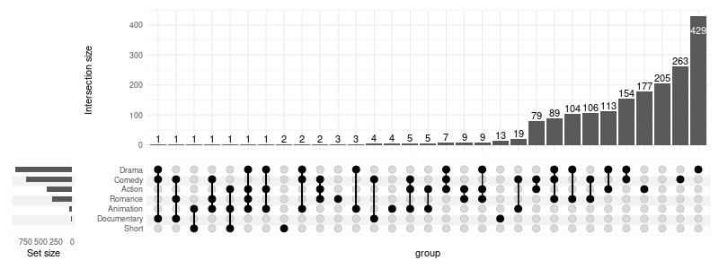
Without any sorting:
%%R -w 800 -h 300 upset(movies, genres, width_ratio=0.1, sort_intersections=FALSE)
8.2 Sorting sets
Ascending:
%%R -w 800 -h 300 upset(movies, genres, width_ratio=0.1, sort_sets='ascending')
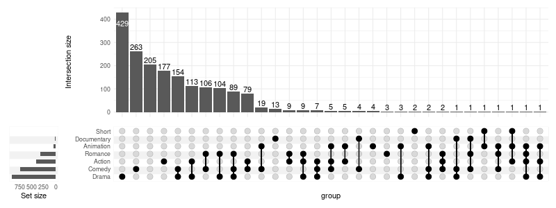
Without sorting - preserving the order as in genres:
[‘Action’, ‘Animation’, ‘Comedy’, ‘Drama’, ‘Documentary’, ‘Romance’, ‘Short’]
%%R -w 800 -h 300 upset(movies, genres, width_ratio=0.1, sort_sets=FALSE)